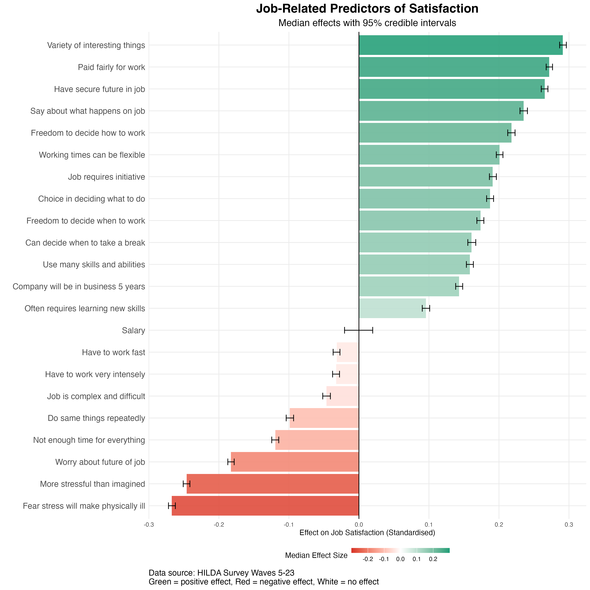

The common wisdom is that more money equals more happiness at work, but the reality is often more complex. We've all seen a highly paid employee who's miserable, or a lower-paid one who's completely engaged. This paradox raises a critical question: What truly drives job satisfaction? The stakes are high. A report by the Australian Human Resources Institute (AHRI) found the turnover rate has increased across almost all organisation sizes, with more than half of surveyed employers believing their turnover rate is "far too high." In a world of evolving hybrid work and employee expectations, understanding the real drivers of satisfaction is increasingly important. Is salary the key, or are factors like autonomy and stress the true predictors of how happy an employee is in their role?
Drivers of Job Satisfaction: What the Data Show
To understand what truly drives satisfaction, we analysed workplace factors using data from the Household, Income, and Labour Dynamics in Australia (HILDA) survey, a long-term study of Australian life. Our sample was 22,239 Australian workers tracked for almost two decades from 2005 to 2023. We used Bayesian mixed-effects models to predict job satisfaction (standardised) based on 21 key workplace factors. These included autonomy (freedom to decide how, when, and what to work on), job demands (time pressure, work intensity), job characteristics (skill use, variety, learning opportunities), security (job security, fair pay, company stability) and stress. We also controlled for other factors like age, gender, salary, occupation, and industry to isolate the effects of these variables.
The figure below shows the results of our analysis. The bars display the best estimate for each factor's effect on job satisfaction, while the error bars show the 95% credible intervals, which represent the range where the true effect most likely lies. We've ranked the factors from most negative (bottom) to most positive (top). Green bars mean a factor credibly increases satisfaction, red bars mean it credibly decreases it, and grey means there's no credible effect.

Our analysis revealed interesting patterns in what drives workplace satisfaction. The strongest positive predictor was having variety in one's work, followed closely by being paid fairly and having a secure future in the job. The different measures of autonomy also had a substantial positive impact, including having a say in what happens on the job, and freedom over how, when, and where to work. When employees reported more variety, fairness, security, and control, their satisfaction was notably higher.
By contrast, stress-related factors were the biggest drain on satisfaction. The strongest negative association came from the fear that work stress would cause physical illness. This was closely followed by feeling that the job was more stressful than expected and worrying about the future of one's job. Time pressure also consistently lowered satisfaction, whether from not having enough time, working fast, or needing to work intensively. The data showed that repetitive work was also linked to lower satisfaction, reinforcing our finding that variety is important. When workers faced high stress, job insecurity, time pressure, or monotonous tasks, their satisfaction dropped.
Perhaps the most surprising finding was that salary had no credible effect on job satisfaction. Once we accounted for other factors like occupation and industry, people earning different salaries reported similar levels of satisfaction. This suggests that the perception of being paid fairly matters far more than the actual dollar amount itself.
Building Satisfying Workplaces
Given these findings, organisations might benefit from redirecting some focus from salary benchmarking toward improving job design and workplace culture. Since task variety emerged as the strongest satisfaction predictor, managers may want to consider job rotation programs or project-based work that exposes employees to different challenges. Meta-analytic findings indicate that job rotation is significantly associated with higher job satisfaction and greater organisational commitment. This could involve quarterly role exchanges within teams, cross-functional projects, or allowing employees to dedicate some of their time to initiatives outside their core responsibilities.
The strong negative impact of workplace stress suggests organisations could see meaningful returns from stress reduction initiatives. Rather than treating stress as inevitable, companies might implement workload monitoring systems and establish clear boundaries around work intensity. Meta-analytic evidence shows that organisational interventions focused on workload can reduce levels of exhaustion among employees. Practical steps could include mandatory meeting-free periods, realistic deadline setting, and regular workload reviews between managers and team members.
The importance of multiple dimensions of autonomy points to the value of flexible work design. Policies could include allowing employees to choose their work methods within quality parameters, offering flexible scheduling where possible, and involving staff in decisions that affect their roles. For instance, letting employees determine their own workflows while still maintaining output standards, or allowing teams to set their own meeting schedules within broader organisational constraints. Meta‑analytic evidence indicates that leader autonomy support is positively associated with autonomous work motivation, need satisfaction, well‑being, job satisfaction, engagement, and performance.
The Bottom Line
Our analysis of over twenty thousand Australian workers reveals that salary has little measurable impact on job satisfaction. Instead, variety, autonomy, and manageable stress levels are what actually drive satisfaction. Organisations chasing employee happiness through salary increases are solving the wrong problem. The path to a satisfied workforce runs through thoughtful job design, genuine autonomy, and sustainable workloads.